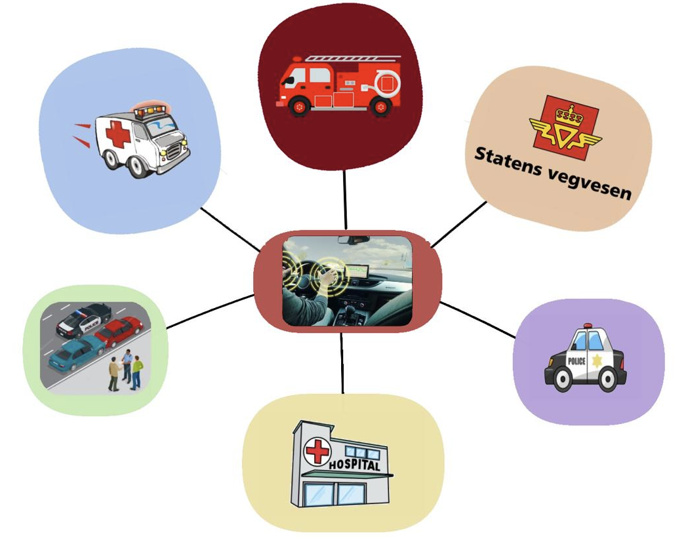
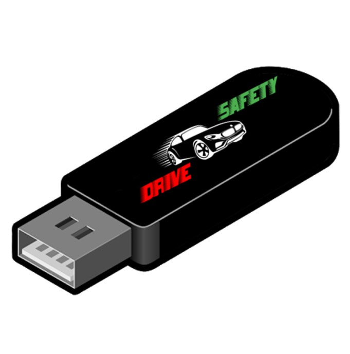
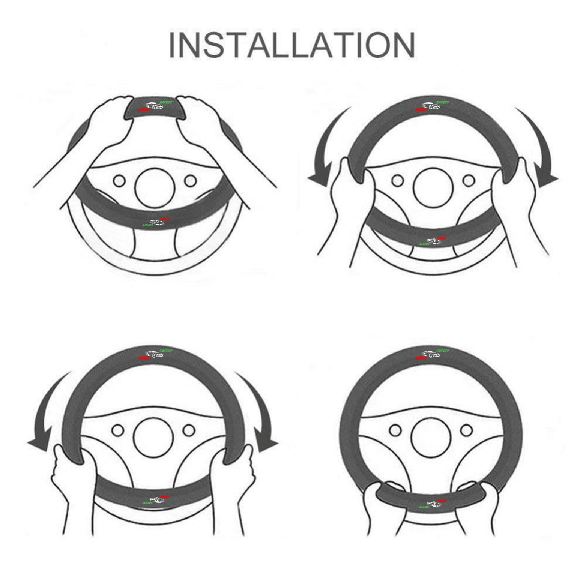

FUNKSJON
Hvordan fungerer Safety Drive-systemet?
Safety Drive er et program som er installert på bilsystemet slik at det er koblet til
det og hjelper det med å lagre viktig informasjon knyttet til sjåførens sikkerhet.
Safety Drive er assosiert med offentlige avdelinger som sykehus, brannstasjon, politi,
trafikk og bilverksteder.
Ideen om det nye systemet er basert på noen sensorer som finnes i bilen. Disse
sensorene analyserer dataene etter bilulykken, og sender dem deretter til
beredskapssentralen direkte gjennom bilen, noe som hjelper til med å få
raskere ankomst av ambulanser til ulykkesstedet.
Safety Drive sender automatisk data, for eksempel kjøretøyets plassering,
alvorlighetsgraden av ulykken og den resulterende skaden, i tillegg til brukernes
tilstand og måling av pulsen gjennom pulssensorene på rattet, til den sentrale
informasjonen butikk, som igjen mottar disse dataene og sender dem til nærmeste
ambulanse eller for å redde de sårede.
Prosedyrene som Safety Drive-systemet tar før ringer
Automatisk nedbremsing ABS.
Ved bruk av frontkameraer og radar vil sikkerhetsvarigheten utløse en automatisk nedbremsing som
advarer sjåføren om en overhengende frontkollisjon med et annet kjøretøy,fotgjenger eller noe
så vil appen vår knuse bilen på vegne av sjåføren hvis det ikke blir gjort noe.

Sjåførvarslingssystem ved søvnighet under kjøring:
Dette systemet overvåker sjåførens oppmerksomhets- og årvåkenhetsnivå ved å måle antall
hjerterytmer som øker når du føler deg søvnig, for eksempel eller overvåker bilens
bevegelse og omfanget av avviket. så varsler bilen om behovet for å ta pauser mens
han kjører, gjennom et sett med talemeldinger som systemet starter. Men hvis disse
varslene ikke er nyttige, strammer systemet automatisk bilbeltene og i kritiske
kjøresituasjoner og stopper bilen automatisk.
Appens funksjoner
Det er også en funksjon i denne appen for å sikre førerens beskyttelse og helse. Denne appen
inneholder sjåførens komplette helse fil, som beredskap og ambulansepersonell og leger kan
stole på for å kjenne sjåførens tilstand.
I tillegg til dette inneholder appen en nødanropsfunksjon i tilfelle en ulykke på
veien, eller sjåførens helsetilstand var dårlig som besvimelse eller svimmelhet.
Kort sagt, denne funksjonen lar deg ringe nødsituasjoner i ditt land, politi eller sivil
beskyttelse ved hjelp av sansefunksjonen på førerens ratt. Som igjen måler hjertefrekvensen
og trykkfrekvensen til hver sjåfør, og hvis frekvensen endrer seg fra normal, sender
appen en automatisk melding med plasseringen til personen hvis hjertefrekvens endret
seg på grunn av ulykken eller besvimelse til nærmeste sykehus, brannstasjon eller politi stasjon.
Hvordan installere?

Først må du kjøpe produktene våre fra butikken nærmest deg.
Produktet er en USB-driver og rattdeksel som har spesielle sensorer for å måle hjertefrekvensen
For å installere appen i bilens system, sett inn USB-stasjonen i USB-porten i bilen din og kjør applikasjonen.
I mellomtiden installerer du rattdekselet på bilens ratt.
Her er et bilde som forklarer hvordan du installerer rattdekselet
Rattdekselet jobber med å måle hver sjåførs hjertefrekvens og blodtrykk
og har en smart teknikk som husker hver sjåførs normale helsetilstand
og sender en presserende melding til nærmeste sykehus eller politistasjon
i tilfelle om noe var unormalt.

Nyt trygg kjøring med sikkerhetsprogramvaren vår som beskytter deg overalt.😊